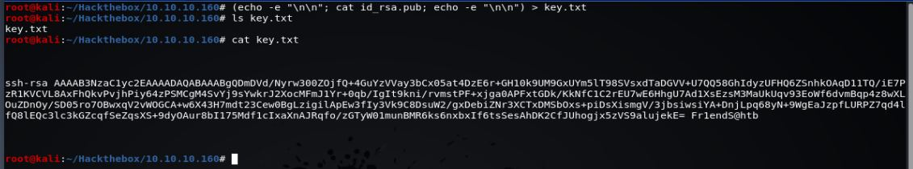

HTB Máquina Postman
angussMoody
- Sistema: Linux
- Puntuación: 4.0
- Categoría: Fácil
• Usuario:
Realizamos en escaneo con Nmap y vemos que el puerto 6379/tcp está abierto y corre con el servio de redis, pues vamos a ver qué podemos hacer con redis.
nos encontramos con una referencia que nos muestra un paso a paso de como podemos explotar este servico
lo principal es comprobar si tenemos una conexion por medio de telnet en la máquina y comprobamos que si contamos con dicha conexión

Como podemos ver no tiene una contraseña configurada, así que podemos tratar de escribir algo en Authorized_keys, con lo que nos crea el archivo id_rsa y id_rsa.pub con la contraseña que hemos puesto
Ahora debemos poner esta clave en la memoria del servidor redis y darle salida en un archivo .txt

Con esto logramos que key.txt sea nuestra clave pública. Ahora utilizaremos redis-cli para escribir esta cadena dentro de la memoria de redis. Y así volcar la memoria en el archivo authorized_keys y guardamos.
Con este paso el archivo de authorized keys debe tener incluida nuestra clave pública

Encontramos el user.txt, pero no tenemos los permisos necesarios para leer el archivo, aunque ya sabemos que hay un usuario llamado Matt
debemos encontrar una forma de autenticarnos con Matt, buscando en la maquina encontramos un archivo llamado id_rsa.bak, lo leemos y al tenemos un archivo encriptado, pues vamos a ver que puede darnos este archivo.
Lo guardamos como id_rsa.hash y en este caso vamos a tratar de desencriptar este archivo con ssh2john y posteriormente le pasamos rockyou con John.
De esta manera tenemos un usuario y una contraseña, debemos buscar la forma de pasarnos de redis a Matt, con el comando su Matt desde redis ponemos la contraseña y nos pasamos al usuario Matt.
de esta manera obtenemos nuestra primer flag.
• Escalada de Privilegios:
Vamos a utilizar metasploit para la explotación del puerto 10000 con los datos obtenidos hasta el momento utilizaremos el exploit webmin_packageup_rce

Ejecutamos nuestro exploit y vamos a hacer uso del comando python -c ‘import pty;pty.spawn(“/bin/bash”)’ para tener una Shell más completa.
De esta manera encontramos la flag del Root.
Saludos Fr13ndS HTB